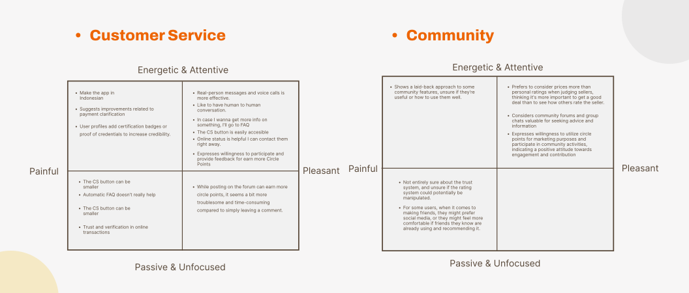
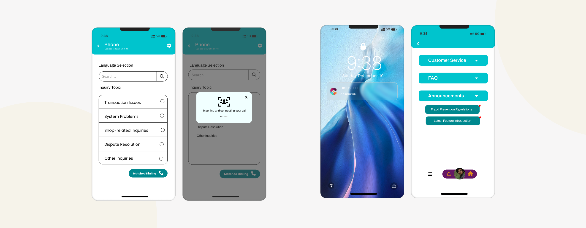
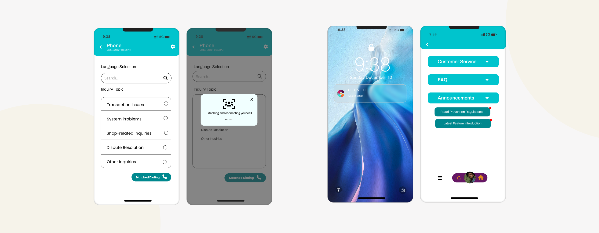
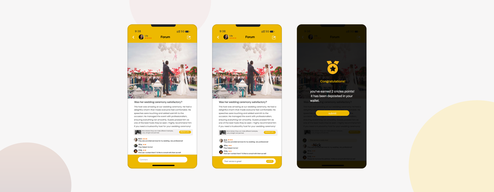
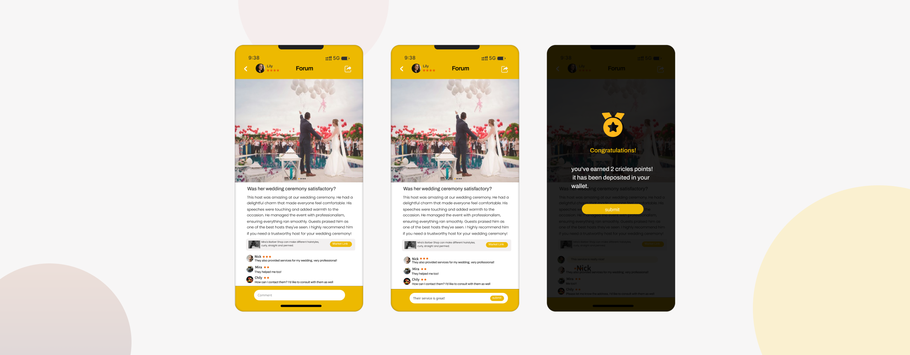

Flavory-Discover Culture through food
AI-powered food exploration, personalized for taste and trust.
Project Overview
Flavory is designed to address the challenge of discovering authentic cultural food while enhancing community-driven engagement. Many users struggle to verify food authenticity and navigate overwhelming choices. Flavory offers a trusted food discovery platform with a focus on user-verified authenticity and personalized recommendations.
My Role
UX Researcher
UX Designer
Web Designer
Time
2025
Tools
Figma
Photoshop
Research Tools
Deliverables
MVP Prototype
User Testing Report
Case Study
“How might we encourage users to explore cultural cuisine
in a fun and meaningful way?”
MVP Concept&impact
(features)
-Discover verified authentic restaurants through community reviews.
-Receive AI-powered personalized recommendations based on flavor preferences.
-Engage socially by following food journeys from friends and experts.
-Earn incentives through user participation and verified contributions.
Challenges & solutions
1. Building Cultural Trust
Users were unsure which restaurants offered truly authentic experiences. Traditional star ratings felt vague or misleading.
Solution: We introduced community-verified reviews, expert-endorsed highlights, and storytelling through restaurant pages.
3. Keeping Exploration Simple
While users liked personalization and cultural content, they didn’t want to feel overwhelmed by filters or dense info.
Solution: We streamlined the search flow with intuitive filters (taste, dish, country), short stories, and visual-first layouts.
Interview/User Journey


Design Principles - Customer Service
In addition to FAQ and Announcements, provide human to human conversation by using live chat support, i. e. message or phone consultations for urgent matters. Create an option for the user to attach the screenshots to document the issues with the server.
1/Message :
Provide an intuitive and easy-to-use
messaging system for users to send and receive messages
effortlessly. Design a simple and clear interface where users can
easily view message history, manage contacts, and filter spam
messages. Offer real-time notification features to keep users
informed about new messages promptly.
2/Frequently Asked Questions (FAQ):
Establish a
comprehensive FAQ page covering common questions and solutions. Use
clear and concise language to ensure users can easily understand
both questions and answers. Implement categorization and search
functionality to enable users to quickly find the questions and
answers they're interested in.
3/Phone Contact:
Provide an option for phone contact
within the application, allowing users to directly reach out to
customer service representatives.
4/Announcements:
This will be a feedback channel that
received feedback will be displayed here and cell phones will be
notified.
 


Design Principles -Community
Create a community engagement platform that encourages positive behavior and earns additional Circle Points for participation, as well as attracts new users and facilitates interaction between users.
1/Establish a community forum: Establish an open community forum where users can share their experiences and communicate with each other, and where the user interface is easier to use and more intuitive, which is conducive to user participation.
2/ Set up a reward mechanism: Design a reward mechanism that encourages users to show positive behaviors in the community, such as making valuable posts, providing helpful suggestions, or helping other users solve problems. These positive behaviors can be rewarded with additional Circle Points.
3/ Establishment of groups for different services or commodities to facilitate users to look for business opportunities or personal required services on the platform.
4/ Merchants use Circle Points to promote their products and services. They also set up a popular product recommendation competition to display popular products or services for users and enhance user stickiness.

 

Rating System
create a comprehensive and fair evaluation framework that promotes positive interactions, professionalism, and personalization within the platform.
1/A subjective rating of an individual or merchant based on
transactions or conversations.
2/ Real-time online rating,
positive or negative.
3/ Display star ratings in the profile
at all times
4/ rating system:
Establish a multi-dimensional
rating system that allows users to rate individuals or businesses
based on different aspects. For example, set up separate rating
categories to assess social , review quality, professional, and
personalized service.